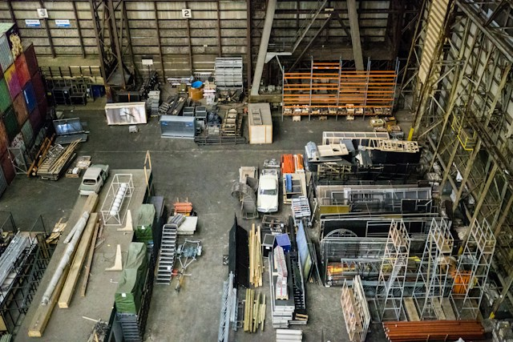

Les métiers de la logistique emploient de nombreuses personnes dédiées à l'acheminement des biens chez les particuliers et les entreprises.
L'assistant logistique travaille sous la direction du responsable logistique et peut intervenir à n'importe quel moment du processus logistique. Il supervise les entrées et sorties des stocks, aide au chargement et au déchargement des camions et veille au respect des règles de sécurité dans les entrepôts. En fonction de la taille de l'entreprise, ses activités seront différentes. L'assistant logistique peut aussi s'occuper du service après-vente, des contacts avec les fournisseurs, les transporteurs ou les clients.
Le préparateur de commandes est en charge du regroupement et du conditionnement des marchandises. Il transporte les marchandises grâce à un véhicule de manutention, comme un transpalette ou un chariot élévateur. Afin de bien conditionner les produits, le préparateur de commandes vérifie avec attention les bons de commande (références, quantités, etc.) avant de d'effectuer chaque préparation de commande. Pour certaines marchandises, il doit veiller à respecter scrupuleusement la chaîne du froid ou les règles en vigueur pour les produits dangereux. L'entreprise peut exiger l'obtention du permis CACES avant de vous embaucher.
Le travail du déménageur consiste à emballer et transporter les biens d'une entreprise ou d'un particulier d'un endroit à un autre. Il peut effectuer des déménagements sur le territoire français, mais aussi de la France vers un pays étranger. Une fois arrivé à destination, il est en charge du déballage des biens. Sa mission est de veiller à restituer les objets en bon état et à s'assurer que le conditionnement de ces objets est adapté au transport.
Lors d'un déménagement vers l'étranger, le déménageur se charge aussi des formalités douanières. Un déménageur ne peut pas être indépendant et travaille uniquement au sein d'une structure. Généralement, il travaille en équipe.
L'assistant import-export veille à l'application des règlementations internationales dans le cadre de tâches administratives et logistiques. Il est en charge de débloquer certaines situations comme l'acheminement de marchandises bloquées en douane.
L'inventoriste est en charge des inventaires et exerce généralement dans la grande distribution ou dans des magasins spécialisés, comme les magasins de bricolage. Son travail consiste à compter et répertorier les produits d'un rayon. Il repère les produits abîmés ou périmés afin de les retirer de la vente. L'inventoriste travaille souvent en horaires décalés afin de ne pas déranger les clients.
Le chef de rayon est en charge d'un rayon spécifique dans un magasin spécialisé ou une grande surface. Sa mission est d'accroître le chiffre d'affaires de son rayon en incitant à l'achat. Pour ce faire, il s'inspire de techniques marketing qui ont fait leurs preuves. Il veille aussi à ce que le rayon soit toujours rangé et approvisionné, il anticipe les ruptures de stock, s'occupe de l'aspect esthétique du rayon et de tout ce qui peut pousser le consommateur à acheter. Il est en mesure d'élaborer des campagnes promotionnelles, comme faire goûter aux clients les produits alimentaires d'une marque.
La mission du manutentionnaire consiste à ranger, trier et stocker des marchandises dans un entrepôt. Ce métier est très polyvalent : préparateur de commandes, inventoriste, cariste… La liste de ses tâches est longue.
La mission de l'agent de quai ressemble à celle du cariste
. Il réceptionne les marchandises sur les quais, dans les entrepôts ou dans les magasins. Son rôle est de décharger le contenu des camions et de stocker ce contenu à l'endroit prévu. Sa mission est aussi de contrôler les produits réceptionnés en s'assurant qu'ils sont conformes aux exigences du client (quantité, qualité, etc.)
Ce métier nécessite l'utilisation d'engins de manutention, comme des chariots élévateurs.
Aussi appelé planificateur, ce métier consiste à superviser toute la chaîne logistique d'une entreprise. Le rôle du supply chain manager est d'assurer la réduction des coûts, des délais de livraison et des stocks dans le but de garantir la satisfaction des clients. Ce manager a pour mission d'optimiser la production de l'entreprise en apportant des axes d'amélioration, en assurant un suivi du budget et en gardant le contact avec la clientèle.
Le rôle de l'approvisionneur est de suivre et de définir la politique de gestion des stocks. Il a pour mission de :
L'affréteur est l'intermédiaire entre les transporteurs et les clients qui doivent expédier des marchandises. Il est chargé de trouver le meilleur rapport qualité-prix pour la location d'un moyen de transport. Cette location est temporaire. Le délai de cette location est appelé « affrètement ».
Ce métier s'exerce dans des sociétés de transport et de logistique. L'affréteur peut aussi devenir responsable des transports dans les transitaires et dans l'industrie. L'affréteur peut transporter des marchandises comme des passagers.
l’approche pédagogique de DREAM LOGISTICS est basée sur l’approche par compétences qui permet aux étudiantes et étudiants d’intégrer à la pratique les grands concepts théoriques et les connaissances issues de la recherche.
Par ailleurs, tout est fait pour rendre le cadre de vie des étudiants le plus fonctionnel possible.
Ouvertes à l’ensemble de la communauté estudiantine, nos bibliothèques couvrent l’ensemble des champs disciplinaires des formations proposées par l’académie.

Nous proposons des séances de travaux appliqués ou expérimentaux concernant une problématique spécifique d'un des nombreux domaines disciplinaires dont nous assurons la formation.
De nombreuses possibilités pour développer votre pratique sportive et entretenir votre physique.
Nos restaurants vous proposent de nombreux services de restauration pouvant satisfaire tous les goûts et toutes les envies !